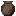
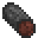

1.20.1 / (Addon) Firmalife擴充套件模組 / 更多的肥料獲取途徑

更多的肥料獲取途徑
更多的肥料獲取途徑
Firmalife中對肥料的需求更大, 因此有更多的獲取肥料的途徑.
Compost Tumblers are a great way to produce more fertilizer. They must be connected to mechanical power in order to work. It can only be interacted with when not powered, so consider connecting it to a clutch!


The compost tumbler is unique in that it takes more types of compost, and does not require precise ratios in order to work.
The tumbler can take green and brown items like a regular composter. It can also take pottery sherds, charcoal, fish, and bones in small amounts.



Smashing pottery with a hammer yields sherds.
While the regular composter takes 16 'compost units', the tumbler can hold 32. Green and brown items count the same, being on the range 1-4, but the new additions like fish always count for 1.
Adding too much weird stuff to the composter causes it to produce rotten compost. Further, you will not know it is rotten until the very end! If the compost is more than fifteen percent bones, fish, or pottery, or more than twenty percent charcoal. it will rot. Or, if there are 10 or more green units than brown units, it will rot.
Favorable amounts of certain additions can extend or shorten the length of time it takes for the compost to complete. Play around with it and see what happens.
If 32 units are in the composter, 3 compost will be produced. If at least 24, 2 compost will be made. If 16 or more, 1 will be made. Below that, and there will be no compost.